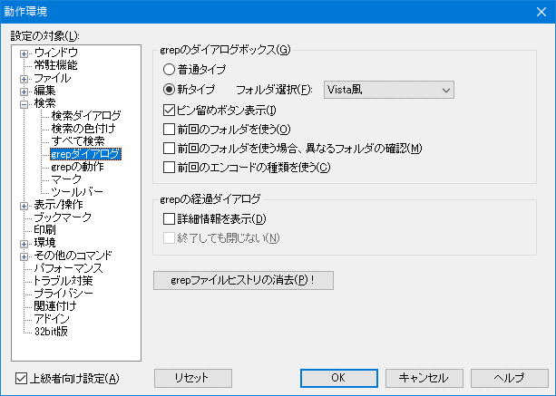

現在編集しているファイルの内容や、あるフォルダに置かれている複数のファイルから、 特定の文字列を含んだ行を全て調べる事ができます(grep("ぐれっぷ"と読む(^^;)機能)。
また、調べた結果の出力ファイルを使って、文字列の見つかった行(ファイル)へ直接移動する事ができます(タグジャンプ機能)。
例えば、c:\diary フォルダにある、*.txt という拡張子を持つファイルから、「Love」という文字列を含む全ての行を調べたいとします。
メニューバーの「検索→grepの実行」を選択して下さい。

一番上にある「検索する文字列」の部分に探したい文字列(今の例だと「Love」)を記入して下さい。
その下にある「検索するファイル」の部分に、検索対象となるファイル名を記入します(今の例だと「*.txt」)。
※現在編集中の内容に対して実行したい時は、入力ボックスの右端にある矢印ボタンをクリックして"(現在の内容)"を選択して下さい。
※ファイル名にはMS-DOSのコマンドライン入力でお馴染み(?)の「ワイルドカード」が使用できます。 また、複数のファイル名を入力したい時は、ファイル名を";"(半角のセミコロン)で区切って下さい (ex."*.txt;file_?.man;a.doc")。
その下にある「検索するフォルダ」で、検索対象のファイルのあるフォルダを選択します(今の例だと「c:\diary」)。 「...」ボタンを押すと、フォルダ参照ダイアログが開き、フォルダを選択可能です。
「大文字／小文字の区別」チェックボックス：
検索文字列の大文字と小文字を区別して検索します。この項目がＯＦＦの場合、上の例で「LOVE」や「love」も検索されます。
「単語の検索」チェックボックス：
この項目がＯＮになっていると、「Lover」や「ILoveNY」等の、ある単語の一部になっている場合は検索されません。 ここで言う「単語」とは、半角英字とアンダースコア("_")のみで構成された文字(列)を指します。
「正規表現」チェックボックス：
検索文字列に「正規表現」が使える様になります。この項目をＯＮにすると、上記二つのオプション指定は無効になります。
「正規表現」については「●正規表現について」を参照して下さい。
「あいまい検索」チェックボックス：
「正規表現」をさらに便利にした「あいまい」な検索が可能になります(全半角同一視等…説明もあいまい(^^;)。
「追加の条件」チェックボックス：
追加の条件に従って検索する範囲を制限できます。
検索の「追加の条件」についてを参照してください。
「検索文字列を強調」チェックボックス
検索を実行後、検索に該当する文字列を強調表示します。
「ヒットしない行」チェックボックス
これをONにすると、ヒットしない行を出力します。「追加の条件」が指定されている場合は、この設定は無効になります。
「サブフォルダも検索」チェックボックス：
この項目がＯＮの時、指定されたフォルダにサブフォルダがある場合そのサブフォルダの中のファイルも検索します。
「最小化状態で実行」チェックボックス：
grepの実行時は、実行結果を表示するための秀丸エディタウィンドウを自動で開きますが、この項目がＯＮの時はgrepの実行が終了するまで、 この結果表示ウィンドウをアイコン化します。
「ファイル名一覧だけ作成」チェックボックス：
7. の出力結果の違いをご覧下さい。
「ファイル名をフルパスで出力」チェックボックス：
この項目がＯＮの時、検索文字列が見つかったファイルのファイル名をフルパスで出力します。 ＯＦＦの場合はファイル名だけを出力します。
「エンコードの種類」コンボボックス：
検索するファイルのエンコードを指定します。「自動判定」で不都合がある場合には、指定してみてください。 ただし、検索対象が全部同じエンコードでないと、誤判定します。
右上の「ＯＫ」ボタンを押すと検索が始まります。
実行が終わると結果を表示するウィンドウができています。 その内容は「ファイル名一覧だけ作成」チェックボックスのＯＮ／ＯＦＦによって少し違います。
「ファイル名一覧だけ作成」が「ＯＦＦ」の時の動作
この項目がＯＦＦの時は、検索文字列が見つかった全てのファイル名と行を結果として書き出します。
[実行結果の例("file?.txt"について"２"を検索)]
file1.txt(2): ファイル１の２行目
file1.txt(20): ファイル１の２０行目
file2.txt(1): ファイル２の１行目
file2.txt(2): ファイル２の２行目
(以下略)
「ファイル名一覧だけ作成」が「ＯＮ」の時の動作
この項目がＯＮの時は検索文字列が存在したファイル名(と始めに見つかった行番号)だけを結果として書き出します。 [実行結果の例("file?.txt"について"２"を検索)]
file1.txt(2)
file2.txt(1)
file3.txt(2)
file4.txt(2)
(以下略)
grepに関係する動作環境です。


結果ウィンドウのファイル名の部分にカーソルがある状態で「その他→タグジャンプ」を選択すると、 (開かれていない時は開いてから)そのファイルの該当する行へ移動する事ができます。 また、「バックタグジャンプ」で元の結果ウィンドウに戻る事もできます。
さらに、この結果ウィンドウをファイルとして保存する事もできて、上記の「タグジャンプ」も後から使用できます。 (ファイル名がフルパスでない場合は、ファイルを開いた箇所からの相対パスになるので、 「検索するフォルダ」に結果を保存する必要があります。)
設定により、結果ウィンドウのファイル名の部分をダブルクリックする事で、タグジャンプさせる事も可能です。 「動作環境−検索−grepの動作」にある、「grep結果」の「grep結果上ではダブルクリック=タグジャンプとする」に、 チェックを入れてください。
grepダイアログの種類は2種類あります。
新タイプは、[手順]にあるダイアログで、普通タイプは、フォルダ選択画面と一体になっています。
新タイプはフォルダ選択ダイアログが別になっている事もあり、種類も変更可能です。好みに応じて設定を変更してください。
通常、grep実行時に開いているファイルの場所を「検索するフォルダ」に自動的にセットしますが、 前回grep実行時のフォルダを最初からセットする事も可能です。
「動作環境 − 検索 − grepダイアログ − grepのダイアログボックス」にある、「前回のフォルダを使う」に、 チェックを入れてください。
「検索するフォルダ」は、「検索するファイル」と違い、複数箇所の指定は出来ません。
「動作環境 − 検索 − grepダイアログ − grepの動作」で、検索するファイルの設定が可能です。
「検索するファイル」の指定にマッチするファイルに対し、「除外」する方向の設定。
隠しファイルを除外
ファイル・フォルダの属性で、「隠しファイル」(HIDDEN)フラグが設定されいる場合は、 対象ファイル・フォルダでも除外します。
バイナリファイルと思わしきファイルを除外
exeファイルなどテキストではないファイルを、除外します。
exeファイル等、あきらかに拡張子で判定可能なものは拡張子で判断し、それ以外はファイルを開いて判定します。
指定した拡張子を除外
指定した拡張子を持つファイルを、対象外にします。
記述方法は2つあり、記述方法が異なるので注意。(混在は不可)
拡張子を指定する記述方法
"."(ドット)を含まない拡張子を指定します。実行ファイルの場合、 ".exe" ではなく "exe" と指定する。
複数の拡張子を指定する場合は " "(スペース)で区切る。
実行ファイル(*.exe)とDLL(*.dll)を除外する場合： exe dll
ワイルドカードを含む文字列を指定する記述方法
"*"(アスタリクス)、"?"(クエスチョンマーク)を含む場合です。単独の場合はそのまま記述してください。"*.exe"等。
複数指定する場合は ";"(セミコロン)で区切る。
実行ファイル(*.exe)とDLL(*.dll)を除外する場合： *.exe;*.dll
拡張子と短縮ファイル名を厳密にチェックする。
ワイルドカード使用時のファイル名チェックについての設定です。 チェックを入れておく事をお勧めします。
説明
OSの歴史的な経緯が絡んでいます。
MicrosoftのWindows以前のOSである「MS-DOS」は、ファイル名は英数字で8文字(8バイト)、 拡張子は3文字(3バイト)までしか扱えません。(8.3形式)
Windowsが登場しファイル名の制限が緩和されましたが、MS-DOSとの互換性を考慮し、 MS-DOSのファイル名規則に当てはまらないファイルが作成された場合には、 OSが自動的にMS-DOS規格のファイル名も作成します。
コマンドプロンプトから dir /x で 8.3形式 のファイル名を確認できる。
2016/05/19 19:09 34 file1.txt
2016/05/19 19:09 35 file2.txt
2016/05/19 19:09 35 file3.txt
2016/05/19 19:10 45 FILE3_~2.TXT file3_2longname.txt
2016/05/19 19:10 44 FILE3_~1.TXT file3_longname.txt
↑ OSが自動的に作成した名前
ファイル名が8.3形式以外の場合作成される。上記のようなファイルがあり、チェックなしの状態で、検索するファイルに "*1.txt" を指定すると、
file1.txt(1): 短縮名ファイルのテスト:file1.txt
file3_longname.txt(1): 短縮名ファイルのテスト：file3_longname.txtという結果になり、本来対象にならないはずの「file3_longname.txt」が対象になっています。 これは、OSが自動的に作成したMS-DOS規格のファイル名「FILE3_~1.TXT」が "*1.txt" にマッチするからです。
拡張子部分も同様で、4文字以上の拡張子を付けると、OSが自動的にMS-DOS規格のファイル名を作成します。
2016/05/19 22:57 37 FILE1~1.HTM file1.html
2016/05/19 22:58 35 file2.htm
↑ OSが自動的に作成した名前
ファイル名が8.3形式以外の場合作成される。チェックなしの状態で、検索するファイルに "*.htm" を指定すると、
file1.html(1): 短縮名ファイルのテスト：file1.html
file2.htm(1): 短縮名ファイルのテスト：file2.htmという結果になり、本来対象にならないはずの「file1.html」が対象になっています。 これは、OSが自動的に作成したMS-DOS規格のファイル名「FILE1~1.HTM」が "*.htm" にマッチするからです。
この動作はOSの仕様で、ワイルドカードを使用したファイル検索を行うと、元の名前だけでなく、8.3形式の名前に対してもチェックを行い、 どちらかにマッチした場合は、マッチしたと判定するためです。)
"拡張子と短縮ファイル名を厳密にチェックする。"にチェックを入れておくと、 上記のような事は起こらなくなります。
処理の都合上、マッチした行が長いと全部を表示しない場合や、正規表現の対象となる一行の文字数の上限があります。 その制限に関する設定を行います。
通常使用しているファイルで、1行の文字数が多くなければ、"小さい"や"大きい"で問題ないでしょう。 どんなファイルでも必ずマッチさせたい場合は、"制限なし"を選択します。 (自身の使用環境により、適切と思われる設定を行ってください。)